본 포스트는 서울대학교 Chenglin Fan 교수님의 4190.407 Algorithms (Design and Analysis of Algorithms) 강의 자료(13강 More Dynamic Programming! Longest Common Subsequences, Knapsack, and (if time) Independent Sets in Trees, 총 113장)를 바탕으로, 강의를 처음 듣는 독자도 논리적 흐름을 따라갈 수 있도록 재구성한 것입니다. 1강 표지에 “Part of Slides Borrowed From Mary Wootters”라고 밝혀 두었듯 이 시리즈의 슬라이드는 상당 부분 Stanford의 Mary Wootters 교수님 자료에서 가져온 것입니다. 본문의 대섹션 구분은 3번째 슬라이드의 Today가 세워 둔 흐름 — 1. Longest common subsequence → 2. Knapsack problem (two versions!) → 3. Independent sets in trees — 을 따르고, 110–112번째 슬라이드의 Recap으로 맺었습니다.
한 줄 요약 (TL;DR)
“동적 계획법은 최적 부분 구조 → 재귀식 → 표 채우기 → 해 복원의 레시피이고, 어려운 것은 무엇을 부분 문제로 삼느냐입니다.”
지난 강의에서 동적 계획법을 알고리즘 설계 패러다임으로 소개했다면, 이번 강의는 같은 다섯 단계 레시피를 세 문제에 되풀이해 적용합니다. 최장 공통 부분 수열(LCS)은 두 문자열의 접두사 쌍을 부분 문제로 삼아 2차원 표 \(C[i,j]\)를 \(O(mn)\)에 채우고, 표를 거꾸로 걸어 \(O(m+n)\)에 실제 수열을 복원합니다. 배낭 문제는 물건을 무한히 쓸 수 있는 무제한 배낭이면 더 작은 배낭만으로 충분해 1차원 표 \(K[x]\)로, 물건마다 하나뿐인 0/1 배낭이면 쓸 수 있는 물건도 줄여 2차원 표 \(K[x,j]\)로 풀리며, 둘 다 \(O(nW)\)이지만 입력 크기 \(n\log W\)에 대해서는 다항 시간이 아닙니다. 마지막으로 일반 그래프에서는 NP-완전인 최대 가중치 독립 집합이 트리에서는 뿌리를 넣느냐 마느냐의 두 경우로 나뉘어, 두 배열 \(A\), \(B\)를 함께 채우는 하향식 재귀로 \(O(|V|)\)에 풀립니다. 표 없이 같은 재귀를 돌리면 같은 부분 트리를 거듭 물어 지수적으로 느려지는데, 이것이 동적 계획법이 분할 정복과 갈리는 지점입니다.
1. 지난 시간 (Last Time)
12강(Bellman-Ford, Floyd-Warshall, and Dynamic Programming!)에서 다룬 내용을 슬라이드는 다음과 같이 요약합니다.
- 동적 계획법(dynamic programming)은 알고리즘 설계 패러다임입니다. 특정 알고리즘 하나가 아니라, 알고리즘을 만드는 방법입니다.
- 기본 아이디어
- 최적 부분 구조(optimal substructure)를 찾습니다. — 큰 문제의 최적해가 작은 부분 문제들의 최적해로 이루어집니다.
- 중복되는 부분 문제(overlapping sub-problems)를 활용합니다. — 각 부분 문제를 한 번만 풀고, 그 답을 거듭 다시 씁니다.
- 최종 해를 쌓아 가면서 부분 문제의 해를 표에 기록합니다.
이 세 줄이 이번 강의의 세 예제 모두에서 그대로 되풀이됩니다. 예제마다 달라지는 것은 부분 문제를 무엇으로 잡느냐뿐입니다.
2. 개요 (Today)
오늘은 동적 계획법의 예제를 봅니다.
- 최장 공통 부분 수열(longest common subsequence)
- 배낭 문제(knapsack problem) — 두 가지 변형이 있습니다!
- 트리의 독립 집합(independent sets in trees) — 시간이 있으면 다루고, 없으면 슬라이드를 참고 자료로 남겨 둡니다.
슬라이드는 CLRS 교과서에 동적 계획법의 예가 더 있다고 덧붙입니다.
- 행렬 곱셈의 최적 순서(optimal order of matrix multiplications)
- 최적 이진 탐색 트리(optimal binary search trees)
- DAG의 최장 경로(longest paths in DAGs) 등
이번 강의의 목표는 슬라이드의 말 그대로 “여러분이 동적 계획법에 정말 지루해지는 것”입니다. 키보드에 엎드려 조는 고양이 사진에 DYNAMIC PROGRAMMING — SO BORING!!!이라는 문구를 단 그림이 그 농담을 거듭니다. 같은 레시피를 세 번 되풀이해서, 레시피 자체가 지루할 만큼 익숙해지게 하려는 것입니다.
3. 최장 공통 부분 수열 (Example 1: Longest Common Subsequence)
3.1 두 종은 얼마나 비슷할까요 (How Similar Are These Two Species?)
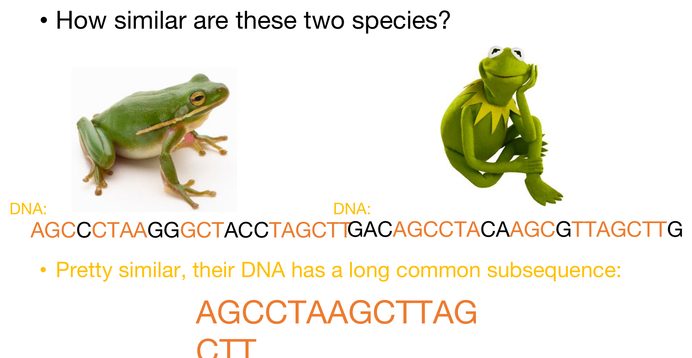
DNA: 표시 아래에 각자의 DNA 염기 서열이 적혀 있습니다. 왼쪽 개구리의 서열은 AGCCCTAAGGGCTACCTAGCTT(22글자), 오른쪽은 GACAGCCTACAAGCGTTAGCTTG(23글자)입니다. 두 서열에서 주황으로 칠한 글자만 순서대로 읽으면 둘 다 AGCCTAAGCTTAGCTT(16글자)가 되고, 검정 글자는 이 공통 부분 수열에 쓰이지 않은 글자입니다. 아래 노란 글씨는 두 DNA가 긴 공통 부분 수열을 가지므로 꽤 비슷하다고 말하고, 맨 아래 큰 주황 글씨가 그 공통 부분 수열입니다. 두 서열의 최장 공통 부분 수열 길이를 직접 계산하면 16이므로, 주황 글자들은 실제로 가장 긴 공통 부분 수열 가운데 하나입니다. 원본 슬라이드에서 두 서열은 띄어쓰기 없이 맞붙어 있고, 맨 아래 공통 부분 수열의 둘째 줄 CTT는 슬라이드 아래 경계에 걸려 잘려 있습니다.강의는 질문 하나로 시작합니다. 이 두 종은 얼마나 비슷할까요?
- 두 생물의 DNA를 나란히 놓고 보면, 한쪽 서열에서 글자 몇 개를 빼고 남은 글자들이 같은 순서로 다른 쪽 서열에도 들어 있는 경우가 많습니다.
- 두 서열이 긴 공통 부분 수열(long common subsequence)을 가지면 꽤 비슷하다고 말할 수 있습니다.
두 DNA의 공통 부분 수열 AGCCTAAGCTTAGCTT는 왼쪽 서열 22글자 가운데 16글자, 오른쪽 서열 23글자 가운데 16글자를 차지합니다. 비슷함을 재는 척도로 공통 부분 수열의 길이를 쓰자는 것이 이 예제의 출발점입니다.
3.2 최장 공통 부분 수열 (Longest Common Subsequence)
슬라이드는 용어를 예와 함께 정의합니다.
- 부분 수열(subsequence): 수열에서 원소 몇 개를 지우고(지우지 않아도 됩니다) 남은 원소를 원래 순서대로 읽은 수열입니다. 예를 들어
BDFH는ABCDEFGH의 부분 수열입니다. - 공통 부분 수열(common subsequence): 수열 \(X\)와 \(Y\)가 있을 때, \(X\)의 부분 수열이면서 \(Y\)의 부분 수열이기도 한 수열입니다.
BDFH는ABCDEFGH와ABDFGHI의 공통 부분 수열입니다. - 최장 공통 부분 수열(longest common subsequence, LCS): 공통 부분 수열 가운데 길이가 가장 긴 것입니다.
ABCDEFGH와ABDFGHI의 최장 공통 부분 수열은ABDFGH입니다.
두 번째 예를 글자 단위로 맞춰 보면 다음과 같습니다. 굵은 글자가 ABDFGH에 쓰인 글자입니다.
| 수열 | 1 | 2 | 3 | 4 | 5 | 6 | 7 | 8 |
|---|---|---|---|---|---|---|---|---|
ABCDEFGH |
A | B | C | D | E | F | G | H |
ABDFGHI |
A | B | D | F | G | H | I |
- 부분 수열은 연속할 필요가 없습니다.
ABCDEFGH에서ABDFGH를 뽑을 때 C와 E를 건너뛰었습니다. 연속한 조각만 허용하는 부분 문자열(substring)과 다른 점입니다. - 최장 공통 부분 수열은 유일하지 않을 수 있습니다. 길이가 같은 공통 부분 수열이 여럿일 수 있기 때문입니다(슬라이드의 정의도 “A longest common subsequence…”로 시작합니다). 위의
ABCDEFGH와ABDFGHI에서는ABDFGHI에서 I를 뺀 여섯 글자가 곧ABDFGH이므로, 이 예의 최장 공통 부분 수열은ABDFGH하나뿐입니다.
3.3 이것을 찾고 싶은 경우 (We Sometimes Want to Find These)
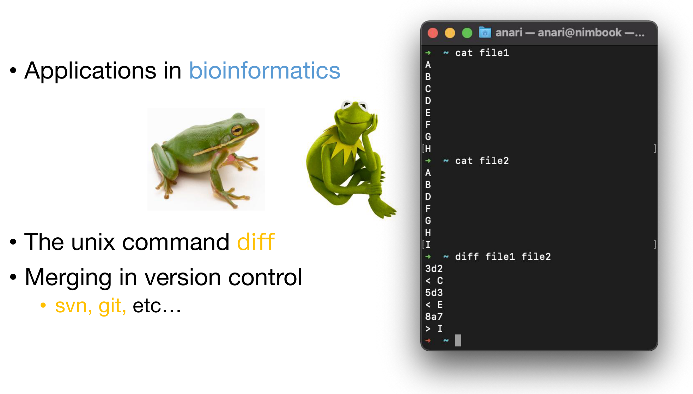
cat file1은 A부터 H까지 여덟 줄, cat file2는 A, B, D, F, G, H, I의 일곱 줄을 보여 주고, diff file1 file2는 3d2와 < C, 5d3와 < E, 8a7과 > I를 출력합니다. 3d2는 file1의 3번째 줄을 지우면 file2의 2번째 줄 뒤와 맞춰진다는 뜻이고, 8a7은 file1의 8번째 줄 뒤에 file2의 7번째 줄을 덧붙인다는 뜻이며, <는 file1에만 있는 줄, >는 file2에만 있는 줄입니다. 지워지지도 덧붙여지지도 않은 A, B, D, F, G, H가 바로 두 파일의 최장 공통 부분 수열 ABDFGH로, 앞 절의 정의에 쓰인 예와 같은 두 수열입니다.최장 공통 부분 수열은 실제로 찾아야 할 일이 많습니다.
- 생물정보학(bioinformatics) — 3.1처럼 DNA나 단백질 서열의 유사도를 잴 때 씁니다.
- 유닉스 명령
diff— 두 파일의 차이를 보여 줍니다. - 버전 관리의 병합(merging) — svn, git 등.
터미널 예가 둘 사이의 관계를 잘 보여 줍니다. 두 파일을 줄 단위 수열로 보면 file1은 ABCDEFGH, file2는 ABDFGHI이고, 이는 3.2의 예와 똑같습니다. diff가 출력한 것은 최장 공통 부분 수열에 들어가지 못한 줄들입니다.
diff 출력 |
뜻 | 해당 줄 |
|---|---|---|
3d2 / < C |
file1의 3번째 줄을 지웁니다(delete) |
C (file1에만 있음) |
5d3 / < E |
file1의 5번째 줄을 지웁니다 |
E (file1에만 있음) |
8a7 / > I |
file1의 8번째 줄 뒤에 file2의 7번째 줄을 덧붙입니다(append) |
I (file2에만 있음) |
남는 줄 A, B, D, F, G, H가 최장 공통 부분 수열 ABDFGH입니다. 공통 부분 수열이 길수록 바꿔야 할 줄이 적어지므로, 가장 짧은 차이 목록은 가장 긴 공통 부분 수열을 찾는 문제와 같습니다.
3.4 동적 계획법 적용 레시피 (Recipe for Applying Dynamic Programming)
슬라이드는 이 강의 전체를 관통하는 다섯 단계 레시피를 제시합니다. 이후 각 예제에서 이 레시피 슬라이드가 거듭 등장하며, 화살표로 “지금 몇 단계에 있는지”를 가리킵니다.
- 1단계: 최적 부분 구조(optimal substructure)를 찾습니다.
- 2단계: 최장 공통 부분 수열의 길이에 대한 재귀식(recursive formulation)을 찾습니다.
- 3단계: 동적 계획법을 써서 최장 공통 부분 수열의 길이를 구합니다.
- 4단계: 필요하면 추가 정보를 기록해 두어, 3단계의 알고리즘이 실제 최장 공통 부분 수열을 찾을 수 있게 합니다.
- 5단계: 필요하면 합리적인 사람답게 코드로 옮깁니다.
배낭 문제와 독립 집합에서는 2–3단계의 “최장 공통 부분 수열의 길이”가 최적해의 값(value of the optimal solution)으로, 4단계의 “실제 최장 공통 부분 수열”이 실제 해(actual solution)로 바뀝니다.
레시피의 순서에는 이유가 있습니다. 2–3단계에서 해 자체가 아니라 해의 값(길이)만 구하는 것은, 값은 숫자 하나라서 표에 담고 비교하기 쉽기 때문입니다. 실제 해는 4단계에서 그 표를 바탕으로 따로 복원합니다.
3.5 1단계: 최적 부분 구조 (Step 1: Optimal Substructure)
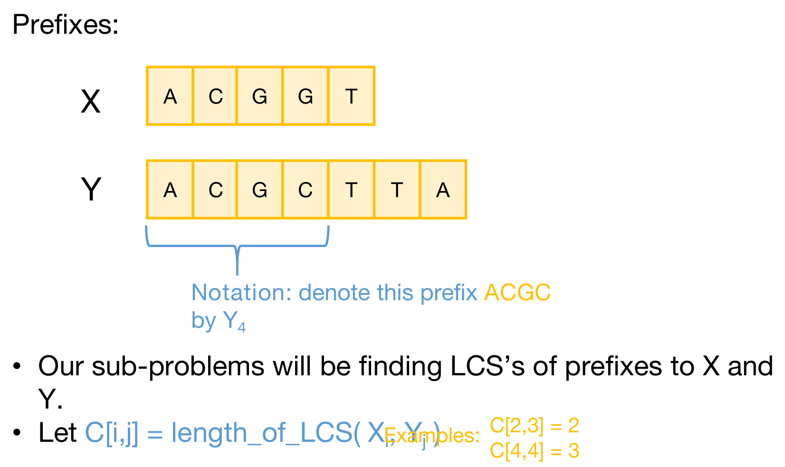
ACGGT(5글자)와 \(Y\) = ACGCTTA(7글자)입니다. \(Y\) 아래의 파란 중괄호가 앞쪽 네 글자 ACGC를 묶고, 파란 글씨가 표기를 정합니다 — 이 접두사를 \(Y_4\)로 씁니다. 아래 검은 글씨는 부분 문제가 \(X\)와 \(Y\)의 접두사들의 최장 공통 부분 수열을 찾는 것이라고 말하고, 파란 글씨가 \(C(i,j)\)를 \(X_i\)와 \(Y_j\)의 최장 공통 부분 수열의 길이로 정의합니다. 오른쪽 아래 노란 예시가 두 값을 줍니다. 칸 \((2,3)\)의 값은 2로, AC와 ACG의 최장 공통 부분 수열 AC의 길이이고, 칸 \((4,4)\)의 값은 3으로, ACGG와 ACGC의 최장 공통 부분 수열 ACG의 길이입니다. 원본 슬라이드에서 노란 Examples: 글씨가 정의 줄의 \(X_i\), \(Y_j\) 위에 겹쳐 찍혀 있습니다.동적 계획법의 첫 질문은 “원래 문제를 어떤 더 작은 문제들로 쪼갤까”입니다. 최장 공통 부분 수열에서는 접두사(prefix)가 자연스러운 답입니다.
- 표기: 수열 \(X\)의 앞쪽 \(i\)글자로 이루어진 접두사를 \(X_i\)로 씁니다. 예를 들어 \(Y\) =
ACGCTTA이면 \(Y_4\) =ACGC입니다. \(X_0\)은 빈 수열입니다. - 부분 문제: \(X\)와 \(Y\)의 접두사 쌍의 최장 공통 부분 수열을 찾습니다.
부분 문제의 값을 슬라이드의 표기 그대로 정의합니다.
\[C[i,j] \;=\; \mathrm{length\_of\_LCS}(X_i,\, Y_j)\]
\(|X| = m\), \(|Y| = n\)이면 \(0 \le i \le m\), \(0 \le j \le n\)이고, 원래 문제의 답은 \(C[m,n]\)입니다.
그림 캡션에서는 대괄호를 쓸 수 없어 표의 칸을 \(C(i,j)\)처럼 소괄호로 적었습니다. 뒤의 캡션에 나오는 \(X(i)\), \(K(x)\), \(K(x, j)\), ITEMS(1), \(A(u)\), \(B(u)\)도 모두 슬라이드와 본문의 대괄호 표기와 같은 것입니다.
슬라이드의 예로 확인해 보겠습니다. \(X\) = ACGGT, \(Y\) = ACGCTTA입니다.
- \(C[2,3]\): \(X_2\) =
AC, \(Y_3\) =ACG의 최장 공통 부분 수열은AC이므로 \(C[2,3] = 2\)입니다. - \(C[4,4]\): \(X_4\) =
ACGG, \(Y_4\) =ACGC의 최장 공통 부분 수열은ACG이므로 \(C[4,4] = 3\)입니다.
부분 문제가 \((m+1)(n+1)\)개뿐이라는 점이 중요합니다. 공통 부분 수열 후보는 지수적으로 많지만, 접두사 쌍은 다항식 개수이므로 모두 표에 담을 수 있습니다.
3.6 2단계: 재귀식 (Step 2: Recursive Formulation)
목표 (Goal)
\(C[i,j]\)를 더 작은 부분 문제들의 해로 나타내는 것이 목표입니다. 두 접두사 \(X_i\)와 \(Y_j\)의 마지막 글자 \(X[i]\)와 \(Y[j]\)를 비교하면 경우가 둘로 나뉩니다.
두 경우 (Two Cases)
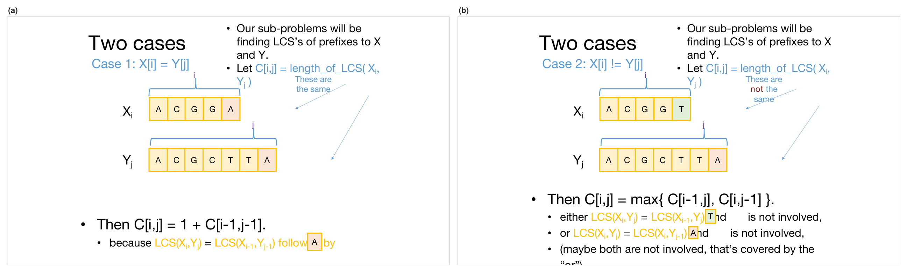
ACGGA와 \(Y_j\) = ACGCTTA처럼 마지막 글자가 같은 경우입니다. 두 마지막 칸의 A가 같은 살구색으로 칠해져 있고, 파란 화살표와 “These are the same”이 둘이 같다는 것을 가리킵니다. 아래 글은 이때 \(C(i,j)\)가 1 더하기 \(C(i-1,j-1)\)이라고 말하며, 그 이유로 \(X_i\)와 \(Y_j\)의 최장 공통 부분 수열이 \(X_{i-1}\)과 \(Y_{j-1}\)의 최장 공통 부분 수열 뒤에 A를 붙인 것이라고 설명합니다. (b) Case 2는 \(X_i\) = ACGGT와 \(Y_j\) = ACGCTTA처럼 마지막 글자가 다른 경우로, 초록 T와 살구색 A가 서로 다르다는 것을 “These are not the same”이 가리킵니다. 이때 \(C(i,j)\)는 \(C(i-1,j)\)와 \(C(i,j-1)\) 가운데 큰 값입니다. 최장 공통 부분 수열은 T를 쓰지 않아 \(X_{i-1}\)과 \(Y_j\)의 것과 같거나, A를 쓰지 않아 \(X_i\)와 \(Y_{j-1}\)의 것과 같으며, 둘 다 쓰지 않는 경우는 이 “또는”에 이미 포함됩니다. 원본 슬라이드에서 작은 글자 상자(A, T)가 “followed by”, “and” 같은 단어 위에 겹쳐 있고, (b)의 마지막 줄은 슬라이드 아래로 잘려 있습니다.Case 1: \(X[i] = Y[j]\) — 마지막 글자가 같은 경우
- 그러면 \(C[i,j] = 1 + C[i-1,j-1]\)입니다.
- \(\text{LCS}(X_i, Y_j)\)는 \(\text{LCS}(X_{i-1}, Y_{j-1})\) 뒤에 그 공통 글자를 붙인 것이기 때문입니다.
Case 2: \(X[i] \ne Y[j]\) — 마지막 글자가 다른 경우
- 그러면 \(C[i,j] = \max\{C[i-1,j],\; C[i,j-1]\}\)입니다.
- \(\text{LCS}(X_i, Y_j)\)는 다음 둘 중 하나이기 때문입니다.
- \(\text{LCS}(X_{i-1}, Y_j)\)와 같고, \(X[i]\)는 쓰이지 않습니다.
- 또는 \(\text{LCS}(X_i, Y_{j-1})\)와 같고, \(Y[j]\)는 쓰이지 않습니다.
- 두 글자가 모두 쓰이지 않을 수도 있는데, 그 경우는 “또는”에 이미 포함됩니다.
슬라이드는 두 경우의 근거를 한 줄씩만 적었으므로, 각 주장을 조금 더 풀어 보겠습니다. 길이 \(k\)인 공통 부분 수열 \(Z = z_1 z_2 \cdots z_k\)를 \(X_i\)와 \(Y_j\)의 최장 공통 부분 수열이라고 합시다.
- Case 1의 근거. \(X[i] = Y[j] = a\)라고 합시다.
- 먼저 \(Z\)의 마지막 글자를 \(a\)로 맞출 수 있습니다. 만약 \(z_k \ne a\)라면 \(Z\) 뒤에 \(a\)를 붙여도 여전히 공통 부분 수열입니다. \(Z\)는 \(X_{i-1}\)과 \(Y_{j-1}\) 안에서 뽑을 수 있고, \(a\)는 두 수열의 마지막 위치에 있기 때문입니다. 그러면 길이가 \(k+1\)이 되어 \(Z\)가 최장이라는 데 모순입니다. 따라서 마지막 글자가 \(a\)인 최장 공통 부분 수열이 있습니다.
- 그 마지막 \(a\)를 두 수열의 마지막 위치에 대응시키면, 나머지 \(z_1 \cdots z_{k-1}\)은 \(X_{i-1}\)과 \(Y_{j-1}\)의 공통 부분 수열이므로 \(k - 1 \le C[i-1,j-1]\)입니다.
- 반대로 \(\text{LCS}(X_{i-1}, Y_{j-1})\) 뒤에 \(a\)를 붙이면 \(X_i\)와 \(Y_j\)의 공통 부분 수열이므로 \(C[i-1,j-1] + 1 \le k\)입니다.
- 두 부등식을 합치면 \(C[i,j] = k = C[i-1,j-1] + 1\)입니다.
- Case 2의 근거. \(X[i] \ne Y[j]\)이면 \(z_k\)는 두 글자와 동시에 같을 수 없습니다.
- \(z_k \ne X[i]\)이면 \(Z\)는 \(X[i]\)를 쓰지 않으므로 \(X_{i-1}\)과 \(Y_j\)의 공통 부분 수열이고, \(k \le C[i-1,j]\)입니다.
- \(z_k \ne Y[j]\)이면 같은 논리로 \(k \le C[i,j-1]\)입니다.
- 어느 쪽이든 \(k \le \max\{C[i-1,j], C[i,j-1]\}\)입니다. 반대로 \(X_{i-1}\)과 \(Y_j\)의 공통 부분 수열이나 \(X_i\)와 \(Y_{j-1}\)의 공통 부분 수열은 모두 \(X_i\)와 \(Y_j\)의 공통 부분 수열이므로 \(k \ge \max\{C[i-1,j], C[i,j-1]\}\)입니다.
이 논증이 바로 최적 부분 구조입니다. 큰 문제의 최적해는 접두사를 한 글자 줄인 작은 문제의 최적해로 만들어집니다. Case 1에서는 두 접두사를 모두 줄인 문제의 최적해 뒤에 공통 글자를 붙이고, Case 2에서는 한쪽 접두사만 줄인 문제의 최적해가 그대로 큰 문제의 최적해가 됩니다.
최적해의 재귀식 (Recursive Formulation of the Optimal Solution)
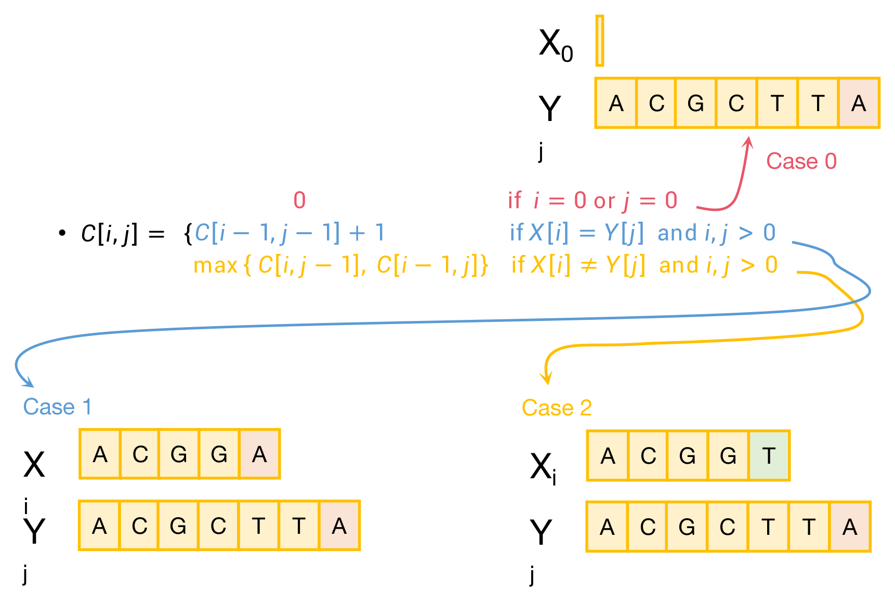
ACGCTTA를 보여 주며 분홍 화살표로 이 줄과 이어집니다. 파랑 둘째 줄은 \(X(i) = Y(j)\)이고 \(i, j > 0\)이면 \(C(i-1, j-1)\) 더하기 1이라는 Case 1로, 파란 곡선 화살표가 왼쪽 아래의 마지막 글자가 같은 예(\(X_i\) = ACGGA, \(Y_j\) = ACGCTTA, 두 A가 살구색)를 가리킵니다. 노랑 셋째 줄은 \(X(i) \ne Y(j)\)이고 \(i, j > 0\)이면 \(C(i, j-1)\)과 \(C(i-1, j)\) 가운데 큰 값이라는 Case 2로, 노란 곡선 화살표가 오른쪽 아래의 마지막 글자가 다른 예(초록 T와 살구색 A)를 가리킵니다. 원본 슬라이드에서 왼쪽 아래 그림의 \(X_i\)와 \(Y_j\), 그리고 오른쪽 위와 오른쪽 아래 그림의 \(Y_j\) 아래첨자가 줄바꿈되어 다음 줄로 밀려 있습니다.세 경우를 모으면 다음 재귀식을 얻습니다. 빈 접두사와의 최장 공통 부분 수열은 빈 수열이므로, Case 0이 기저 사례(base case)가 됩니다.
\[ C[i,j] \;=\; \begin{cases} 0 & \text{if } i = 0 \text{ or } j = 0 \quad \text{(Case 0)} \\[2pt] C[i-1,\, j-1] + 1 & \text{if } X[i] = Y[j] \text{ and } i, j > 0 \quad \text{(Case 1)} \\[2pt] \max\{\, C[i,\, j-1],\; C[i-1,\, j] \,\} & \text{if } X[i] \ne Y[j] \text{ and } i, j > 0 \quad \text{(Case 2)} \end{cases} \]
- 오른쪽 변에 나오는 \(C\)의 인덱스는 언제나 \(i\)나 \(j\) 가운데 적어도 하나가 줄어든 것입니다. 그래서 작은 인덱스부터 채우면 필요한 값이 항상 먼저 준비됩니다.
- \(C[i,j]\) 하나를 계산하는 데는 이미 구한 값 많아야 세 개만 보면 됩니다. 칸 하나에 \(O(1)\) 시간이 든다는 뜻입니다.
3.7 3단계: 동적 계획법으로 길이 구하기 (Step 3: LCS DP)
의사코드 (LCS DP)
재귀식을 그대로 표 채우기로 옮긴 것이 다음 알고리즘입니다.
LCS(X, Y):
C[i,0] = C[0,j] = 0 for all i = 0,…,m, j = 0,…,n. # Case 0: 빈 접두사
For i = 1,…,m and j = 1,…,n: # 행 순서대로, 행 안에서는 왼쪽부터
If X[i] = Y[j]:
C[i,j] = C[i-1,j-1] + 1 # Case 1: 대각선 위 칸 + 1
Else:
C[i,j] = max{ C[i,j-1], C[i-1,j] } # Case 2: 왼쪽 칸과 위 칸 중 큰 값
Return C[m,n]- 수행 시간: \(O(nm)\). 표의 칸은 \((m+1)(n+1)\)개이고, 칸마다 비교 한 번과 상수 개의 표 조회만 합니다.
- \(i\)를 바깥 반복, \(j\)를 안쪽 반복으로 두면 \(C[i,j]\)를 계산할 때 위 칸 \(C[i-1,j]\), 왼쪽 칸 \(C[i,j-1]\), 대각선 칸 \(C[i-1,j-1]\)이 모두 이미 채워져 있습니다.
예제 (Example)
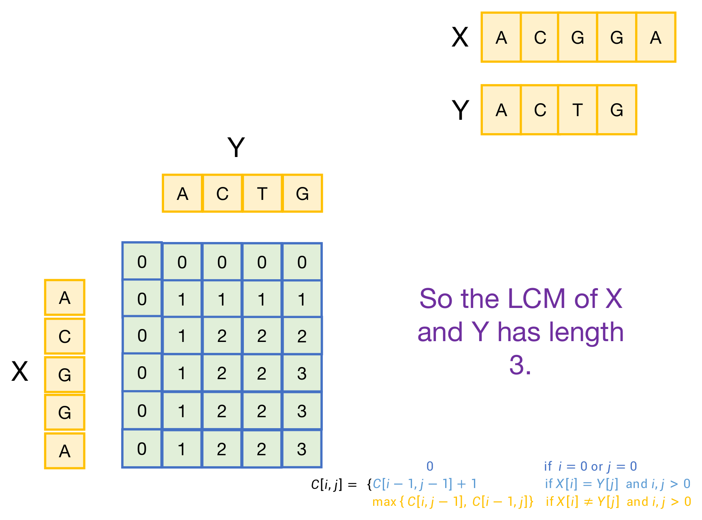
ACGGA와 \(Y\) = ACTG에 대해 3단계 알고리즘으로 채운 표를 보여 주는 슬라이드 19입니다. 오른쪽 위에 두 수열이 노란 칸으로 다시 적혀 있고, 왼쪽 아래 표에서 행은 \(X\)의 글자(위에서부터 A, C, G, G, A), 열은 \(Y\)의 글자(왼쪽부터 A, C, T, G)에 대응합니다. 파란 테두리의 연두색 칸 하나하나가 \(C(i,j)\)이며, 첫 행과 첫 열의 0은 빈 접두사에 대한 Case 0입니다. 그 아래 다섯 행은 위에서부터 0 1 1 1 1, 0 1 2 2 2, 0 1 2 2 3, 0 1 2 2 3, 0 1 2 2 3으로 채워져 있고, 오른쪽 아래 칸의 3이 답입니다. 보라색 글씨는 그래서 \(X\)와 \(Y\)의 최장 공통 부분 수열의 길이가 3이라고 말합니다. 아래의 작은 글씨는 이 표를 채운 재귀식입니다. 원본 슬라이드에서 보라색 글씨가 LCS를 LCM으로 잘못 적었습니다.\(X\) = ACGGA(\(m = 5\)), \(Y\) = ACTG(\(n = 4\))로 표를 채워 보겠습니다. 처음에는 Case 0에 따라 첫 행과 첫 열만 0으로 채워져 있고, 나머지 칸을 위 행부터 차례로 채우면 다음이 됩니다.
| \(C[i,j]\) | \(j=0\) | A | C | T | G |
|---|---|---|---|---|---|
| \(i=0\) | 0 | 0 | 0 | 0 | 0 |
| A | 0 | 1 | 1 | 1 | 1 |
| C | 0 | 1 | 2 | 2 | 2 |
| G | 0 | 1 | 2 | 2 | 3 |
| G | 0 | 1 | 2 | 2 | 3 |
| A | 0 | 1 | 2 | 2 | 3 |
몇 칸을 직접 계산해 보면 재귀식이 어떻게 쓰이는지 보입니다.
- \(C[1,1]\): \(X[1] = Y[1] = \text{A}\) → Case 1, \(C[0,0] + 1 = 1\)
- \(C[2,2]\): \(X[2] = Y[2] = \text{C}\) → Case 1, \(C[1,1] + 1 = 2\)
- \(C[3,3]\): \(X[3] = \text{G} \ne \text{T} = Y[3]\) → Case 2, \(\max\{C[3,2], C[2,3]\} = \max\{2, 2\} = 2\)
- \(C[3,4]\): \(X[3] = Y[4] = \text{G}\) → Case 1, \(C[2,3] + 1 = 3\)
- \(C[5,4]\): \(X[5] = \text{A} \ne \text{G} = Y[4]\) → Case 2, \(\max\{C[5,3], C[4,4]\} = \max\{2, 3\} = 3\)
슬라이드의 결론대로 \(X\)와 \(Y\)의 최장 공통 부분 수열의 길이는 \(C[5,4] = 3\)입니다. 하지만 표는 길이만 알려 줄 뿐, 그 수열이 무엇인지는 아직 모릅니다.
3.8 4단계: 실제 LCS 찾기 (Step 4: Finding an LCS)
거꾸로 걸어가기 (Working Backwards)
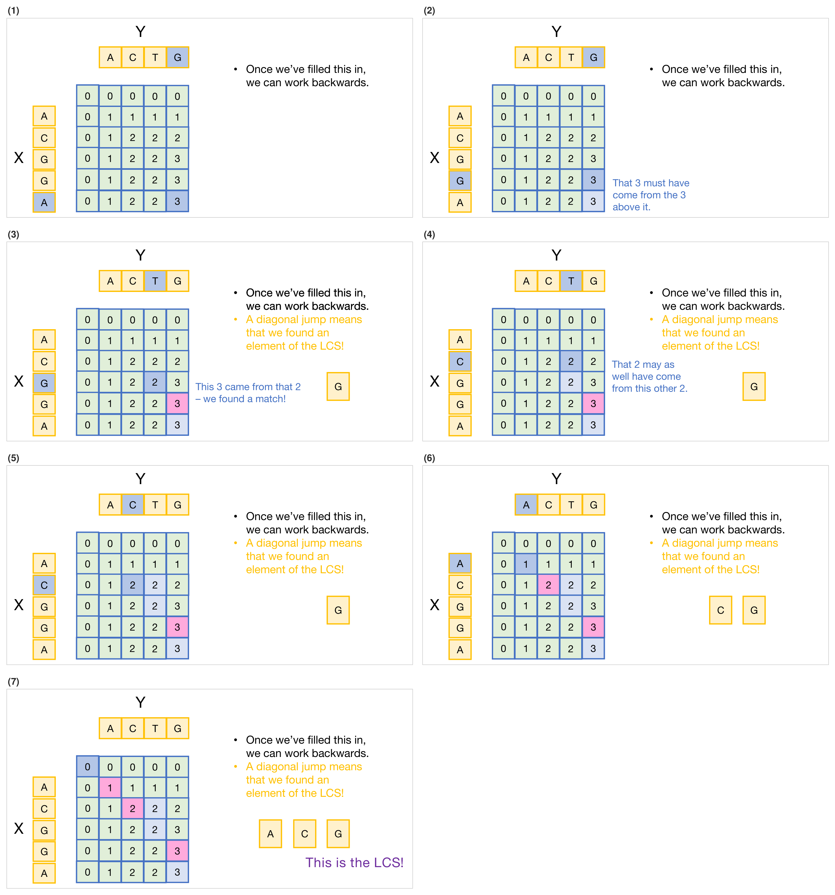
표를 다 채웠으면 거꾸로 걸어갈 수 있습니다(work backwards). 오른쪽 아래 칸 \(C[m,n]\)에서 출발해, 각 칸의 값이 재귀식의 어느 경우에서 왔는지를 되짚습니다.
- \(X[i] = Y[j]\)이면 값은 Case 1, 곧 대각선 위 칸에서 왔습니다. 이 글자는 최장 공통 부분 수열의 원소이므로 모으고, \((i-1, j-1)\)로 갑니다. 슬라이드의 말대로 대각선 점프는 최장 공통 부분 수열의 원소를 찾았다는 뜻입니다.
- \(X[i] \ne Y[j]\)이면 값은 Case 2, 곧 위 칸이나 왼쪽 칸 가운데 큰 쪽에서 왔습니다. 그쪽으로 한 칸 옮깁니다. 두 값이 같으면 어느 쪽으로 가도 됩니다.
- \(i = 0\) 또는 \(j = 0\)이 되면 멈춥니다. 모은 글자는 뒤에서부터 찾았으므로, 찾은 순서를 뒤집은 것이 답입니다.
예제의 경로를 표로 정리하면 다음과 같습니다.
| 장면 | 위치 \((i,j)\) | \(X[i]\) 대 \(Y[j]\) | 값 비교 | 이동 | 모은 글자 |
|---|---|---|---|---|---|
| (1)–(2) | \((5,4)\) | A ≠ G | 위 3, 왼쪽 2 | 위로 | |
| (3) | \((4,4)\) | G = G | — | 대각선 | G |
| (4) | \((3,3)\) | G ≠ T | 위 2, 왼쪽 2 (동점) | 위로 | |
| (5) | \((2,3)\) | C ≠ T | 위 1, 왼쪽 2 | 왼쪽으로 | |
| (6) | \((2,2)\) | C = C | — | 대각선 | C |
| (7) | \((1,1)\) | A = A | — | 대각선 | A |
| 끝 | \((0,0)\) | 멈춤 |
모은 글자를 거꾸로 읽으면 ACG이고, 이것이 \(X\) = ACGGA와 \(Y\) = ACTG의 최장 공통 부분 수열입니다. 길이가 3이므로 표의 답 \(C[5,4] = 3\)과 맞습니다.
- 장면 (4)에서 동점일 때 왼쪽으로 갔어도 됩니다. 동점은 최장 공통 부분 수열이 여러 개일 수 있는 지점인데, 이 예에서는 어느 쪽으로 가도 결국
ACG하나만 나옵니다. - 4단계의 “추가 정보”는 이 예에서 따로 기록할 필요조차 없었습니다. 표의 값과 두 수열만 있으면 각 칸이 어느 경우에서 왔는지 다시 판정할 수 있기 때문입니다.
LCS 찾기 (Finding an LCS)
- 방금 본 과정을 의사코드로 써 보는 것은 좋은 연습입니다. 강의 노트에서도 찾을 수 있습니다.
- 표를 채우는 데 \(O(mn)\) 시간이 듭니다.
- 그 위에 최장 공통 부분 수열을 복원하는 데 \(O(n + m)\) 시간이 더 듭니다.
- \(n \times m\) 배열에서 위와 왼쪽으로만 걸어갑니다.
- 한 걸음마다 \(i\)나 \(j\)가 적어도 하나 줄어들므로, 많아야 \(n + m\)걸음만 걸을 수 있습니다.
- 모두 합하면 \(\text{LCS}(X, Y)\)를 \(O(mn)\) 시간에 찾을 수 있습니다.
3.9 5단계: 우리 방법은 사실 나쁘지 않습니다 (Step 5: Our Approach Actually Isn’t So Bad)
5단계 “합리적인 사람답게 코드로 옮기기”에서는 구현의 효율을 짚습니다.
- 최장 공통 부분 수열의 길이만 필요하다면 공간을 조금 아낄 수 있습니다.
- 표를 한 행씩 채워 나가고, 각 칸은 바로 위 행과 지금 행만 참조합니다. 그러니 원한다면 행 두 개만 유지해도 됩니다. 공간이 \(O(mn)\)에서 \(O(n)\)으로 줄어듭니다.
- 최장 공통 부분 수열 자체를 복원하려면 표 전체를 유지해야 합니다. 거꾸로 걸어가는 경로가 표의 어느 행이든 지날 수 있기 때문입니다.
- \(O(mn)\)보다 빠르게 할 수 있을까요?
- 조금은 빠르게 할 수 있습니다. 로그 인수(log factor) 정도입니다.
- 하지만 훨씬(다항식만큼) 빠르게 하는 것은 열린 문제(open problem)입니다!
3.10 무엇을 배웠나 (What Have We Learned?)
- \(|Y| = n\), \(|X| = m\)일 때 \(\text{LCS}(X, Y)\)를 \(O(nm)\) 시간에 찾을 수 있습니다.
- 동적 계획법 알고리즘을 만드는 단계를 한 번 밟아 보았습니다.
- 2차원 표를 두고, \(X\)와 \(Y\)의 길이를 줄여 가며 문제를 쪼갰습니다.
4. 배낭 문제 (Example 2: Knapsack Problem)
4.1 문제 (The Problem)
물건 \(n\)개가 있고, 물건마다 무게(weight)와 가치(value)가 있습니다. 그리고 배낭(knapsack)이 하나 있는데, 배낭은 정해진 무게까지만 담을 수 있습니다. 슬라이드의 예는 다음과 같습니다.
| 물건 | 거북이 | 전구 | 수박 | 타코 | 소방차 |
|---|---|---|---|---|---|
| 무게 | 6 | 2 | 4 | 3 | 11 |
| 가치 | 20 | 8 | 14 | 13 | 35 |
배낭의 용량(capacity)은 10입니다. 소방차는 무게 11로 용량을 넘으므로 어떤 경우에도 담을 수 없습니다.
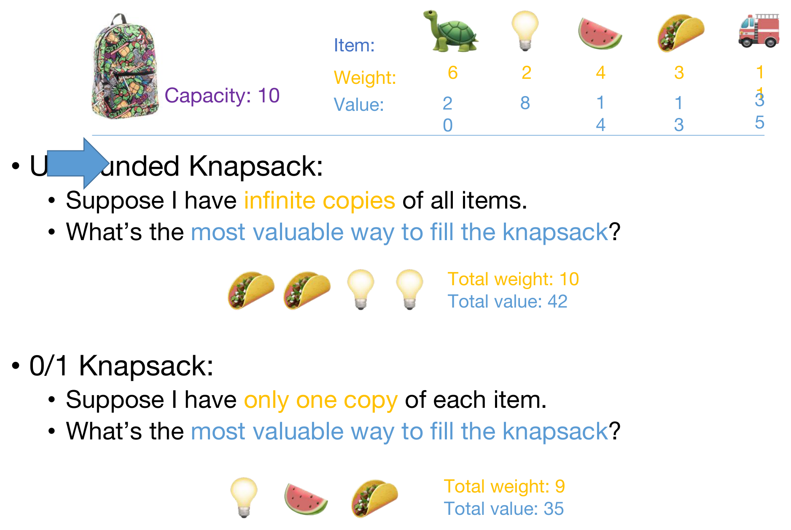
슬라이드는 이 문제의 두 변형을 구분합니다.
| 변형 | 가정 | 질문 | 예제의 답 |
|---|---|---|---|
| 무제한 배낭(unbounded knapsack) | 모든 물건이 무한히 있습니다 | 배낭을 가장 값지게 채우는 방법은? | 타코 2 + 전구 2: 무게 10, 가치 42 |
| 0/1 배낭(0/1 knapsack) | 물건마다 하나씩만 있습니다 | 배낭을 가장 값지게 채우는 방법은? | 전구 + 수박 + 타코: 무게 9, 가치 35 |
두 답이 최적인지 모든 조합을 따져 확인하면 실제로 그렇습니다. 같은 물건을 거듭 쓸 수 있느냐 하나만 다른데도 답이 크게 달라지고, 뒤에서 보겠지만 알맞은 부분 문제도 달라집니다.
4.2 표기 (Some Notation)
- 물건 \(1, 2, \ldots, n\)의 무게를 \(w_1, w_2, \ldots, w_n\), 가치를 \(v_1, v_2, \ldots, v_n\)으로 씁니다.
- 배낭의 용량을 \(W\)로 씁니다.
이 표기로 두 변형을 식으로 쓰면 다음과 같습니다. \(c_i\)는 물건 \(i\)를 담는 개수입니다.
\[ \max_{c_1, \ldots, c_n} \;\sum_{i=1}^{n} c_i\, v_i \quad \text{subject to} \quad \sum_{i=1}^{n} c_i\, w_i \le W \]
무제한 배낭에서는 \(c_i \in \{0, 1, 2, \ldots\}\)이고, 0/1 배낭에서는 \(c_i \in \{0, 1\}\)입니다. “0/1”이라는 이름이 바로 이 제약에서 왔습니다.
4.3 무제한 배낭 (Unbounded Knapsack)
레시피를 적용합니다. 이번에는 2–3단계의 목표가 최적해의 값, 4단계의 목표가 실제 해입니다.
1단계: 최적 부분 구조 (Optimal Substructure)
- 부분 문제: 더 작은 배낭에 대한 무제한 배낭 문제입니다.
- \(K[x]\) = 용량 \(x\)인 배낭에 담을 수 있는 가치
- 먼저 작은 배낭에 대해 문제를 풀고, 그다음 더 큰 배낭, 또 그다음 더 큰 배낭으로 나아갑니다.
이 부분 문제가 왜 맞는지를 다음 그림이 보여 줍니다.
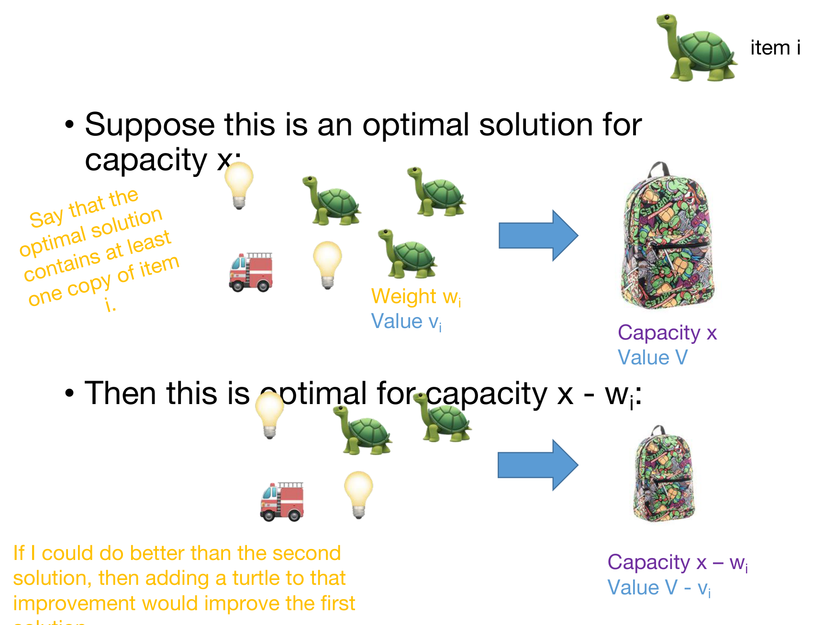
- 용량 \(x\)에 대한 최적해가 있고, 그 안에 물건 \(i\)가 적어도 하나 들어 있다고 합시다. 이 해의 가치를 \(V\)라 합니다.
- 그러면 이 해에서 물건 \(i\)를 하나 뺀 것은 용량 \(x - w_i\)에 대한 최적해입니다. 그 가치는 \(V - v_i\)입니다.
- 왜일까요? 슬라이드는 1분 생각하고 1분 이야기해 보라고 한 뒤, 다음 장에서 답합니다.
- 용량 \(x - w_i\)에 대해 \(V - v_i\)보다 더 좋은 해가 있다고 해 봅시다.
- 그 해에 거북이(물건 \(i\))를 하나 더하면 무게는 \(x - w_i + w_i = x\) 이하이고 가치는 \(V - v_i + v_i = V\)보다 커집니다.
- 이는 첫 번째 해가 용량 \(x\)에 대해 최적이라는 가정과 모순입니다.
빼낸 물건을 다시 넣어도 되는 이유는 무제한 배낭이기 때문입니다. 작은 배낭의 해가 이미 물건 \(i\)를 몇 개 담고 있더라도 하나를 더 넣는 데 아무 제약이 없습니다.
2단계: 재귀식 (Recursive Relationship)
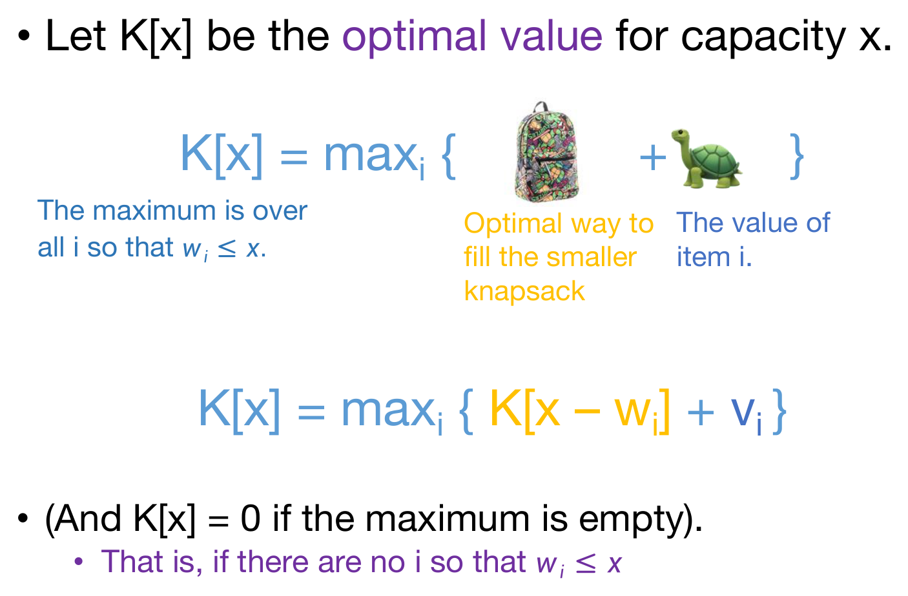
\(K[x]\)를 용량 \(x\)에 대한 최적의 가치라 합시다. 최적해는 비어 있거나, 어떤 물건 \(i\)를 적어도 하나 담고 있습니다. 담고 있다면 앞의 논증에 따라 “더 작은 배낭을 채우는 최적의 방법”에 “물건 \(i\)의 가치”를 더한 것이 됩니다. 어느 \(i\)인지 모르므로, 담을 수 있는 모든 \(i\)에 대해 최댓값을 취합니다.
\[ K[x] \;=\; \max_{i \,:\, w_i \le x} \bigl\{\, K[x - w_i] + v_i \,\bigr\} \]
최댓값을 취할 대상이 비어 있으면, 곧 \(w_i \le x\)인 \(i\)가 하나도 없으면 \(K[x] = 0\)입니다. 특히 \(K[0] = 0\)입니다.
등호가 성립하는 이유를 두 방향으로 확인할 수 있습니다.
- \(\le\): 최적해에 물건 \(i\)가 들어 있으면 \(K[x] = K[x - w_i] + v_i\)이고, 이 항은 오른쪽 최댓값의 후보 가운데 하나입니다.
- \(\ge\): 거꾸로 \(w_i \le x\)인 어떤 \(i\)에 대해서도, 용량 \(x - w_i\)의 최적해에 물건 \(i\)를 하나 더하면 용량 \(x\)에 맞는 해가 되므로 \(K[x - w_i] + v_i \le K[x]\)입니다.
3단계: 상향식 동적 계획법 알고리즘 (Let’s Write a Bottom-Up DP Algorithm)
UnboundedKnapsack(W, n, weights, values):
K[0] = 0
for x = 1, …, W: # 작은 배낭부터
K[x] = 0 # 아무것도 못 담는 경우
for i = 1, …, n: # 마지막에 넣을 물건 i를 모두 시도
if w_i ≤ x:
K[x] = max{ K[x], K[x − w_i] + v_i }
return K[W]- 수행 시간: \(O(nW)\). 바깥 반복이 \(W\)번, 안쪽 반복이 \(n\)번이고, 안쪽에서는 상수 시간만 씁니다.
- \(x\)를 작은 것부터 채우므로, \(K[x - w_i]\)를 읽을 때 그 값은 이미 계산되어 있습니다(\(w_i \ge 1\)이라고 보면 \(x - w_i < x\)).
더 잘할 수 있을까요? (Can We Do Better?)
\(O(nW)\)는 다항식처럼 보이지만, 슬라이드는 입력 크기(input size)를 다시 따져 봅니다.
- \(W\)를 적는 데는 \(\log W\)비트가 듭니다.
- \(n\)개의 무게를 모두 적는 데는 많아야 \(n \log W\)비트가 듭니다.
- 따라서 입력 크기는 \(n \log W\)입니다.
- 그렇다면 \(O(nW)\) 대신 \(O(n \log W)\)에 도는 알고리즘이 있을 수도 있지 않을까요?
- 아니면 \(O(n^{1000000} \log^{1000000} W)\)라도요?
- 열린 문제입니다! (하지만 아마 답은 “아니오”일 것입니다. 그렇지 않다면 \(\mathrm{P} = \mathrm{NP}\)입니다.)
\(W\)는 입력에 숫자 하나로 들어오므로, 그 크기는 비트 수 \(\log W\)로 잽니다. \(W = 2^{b}\)이면 \(O(nW) = O(n \cdot 2^{b})\)로, 입력 크기 \(b\)에 대해 지수적입니다. 교과서에서는 이처럼 입력 숫자의 값에 대해서는 다항식이지만 입력의 길이에 대해서는 그렇지 않은 수행 시간을 유사 다항 시간(pseudo-polynomial time)이라 부릅니다. 반면 예제 1의 최장 공통 부분 수열은 \(O(mn)\)인데, \(m\)과 \(n\)은 수열의 길이이므로 이것은 진짜 다항 시간입니다.
4단계: 실제 해 찾기 (Find the Actual Solution)
3단계의 알고리즘은 최적의 가치만 돌려줍니다. 어떤 물건을 담았는지를 알려면, \(K[x]\)가 갱신될 때마다 그때 쓴 물건을 함께 기록합니다.
UnboundedKnapsack(W, n, weights, values):
K[0] = 0
ITEMS[0] = ∅ # 추가: 용량 0이면 아무것도 담지 않는다
for x = 1, …, W:
K[x] = 0
for i = 1, …, n:
if w_i ≤ x:
K[x] = max{ K[x], K[x − w_i] + v_i }
If K[x] was updated: # 추가: 더 좋은 후보를 찾았다면
ITEMS[x] = ITEMS[x − w_i] ∪ { item i } # 작은 배낭의 해에 물건 i를 더한다
return ITEMS[W]- \(\mathrm{ITEMS}[x]\)는 용량 \(x\)에 대한 최적해의 물건 목록입니다. 같은 물건이 여러 번 들어갈 수 있으므로, 여기서 \(\cup\)는 중복을 허용하는 모음(다중집합, multiset)으로 읽어야 합니다.
- 아래 예제를 보면 “갱신되었다면”은 값이 엄격하게 커졌을 때를 뜻합니다. 같은 값의 후보가 나와도 기록은 바뀌지 않으며, 예제의 \(x = 3\)이 그 경우입니다.
예제 (Example)
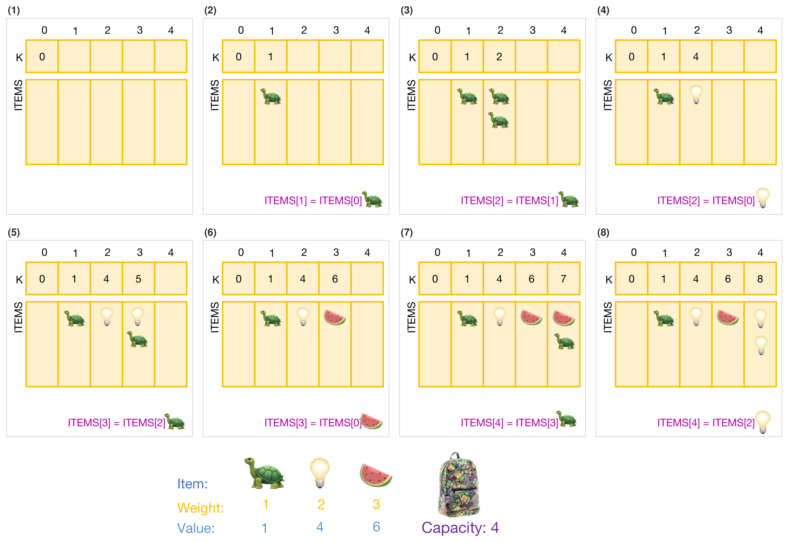
물건은 거북이(무게 1, 가치 1), 전구(무게 2, 가치 4), 수박(무게 3, 가치 6)이고 용량은 \(W = 4\)입니다. 안쪽 반복은 거북이, 전구, 수박 순서로 돕니다. 각 후보 \(K[x - w_i] + v_i\)를 모두 적으면 다음과 같습니다.
| \(x\) | 거북이 (\(w=1, v=1\)) | 전구 (\(w=2, v=4\)) | 수박 (\(w=3, v=6\)) | \(K[x]\) | \(\mathrm{ITEMS}[x]\) |
|---|---|---|---|---|---|
| 0 | — | — | — | 0 | \(\emptyset\) |
| 1 | \(K[0]+1 = 1\) ✓ | 담을 수 없음 | 담을 수 없음 | 1 | 거북이 |
| 2 | \(K[1]+1 = 2\) ✓ | \(K[0]+4 = 4\) ✓ | 담을 수 없음 | 4 | 전구 |
| 3 | \(K[2]+1 = 5\) ✓ | \(K[1]+4 = 5\) (같음) | \(K[0]+6 = 6\) ✓ | 6 | 수박 |
| 4 | \(K[3]+1 = 7\) ✓ | \(K[2]+4 = 8\) ✓ | \(K[1]+6 = 7\) | 8 | 전구, 전구 |
✓ 표시는 그 후보가 \(K[x]\)를 갱신한 경우입니다. 그림의 장면 (1)은 \(K[0] = 0\)만 채운 처음 상태(슬라이드 49)이고, 장면 (2)–(8)이 정확히 이 ✓ 일곱 개를 차례로 보여 줍니다(슬라이드 50–56).
- \(x = 2\)에서는 거북이 둘(가치 2)이 먼저 기록되었다가 전구 하나(가치 4)로 바뀝니다.
- \(x = 3\)에서 전구 후보 \(K[1] + 4 = 5\)는 그때까지의 값 5와 같아서 갱신하지 않습니다. 그래서 슬라이드에는 이 장면이 없고, 바로 수박(6)으로 넘어갑니다.
- \(x = 4\)의 답 \(K[4] = 8\), 전구 둘은 \(\mathrm{ITEMS}[2]\) = {전구}에 전구를 하나 더한 것입니다. 같은 물건을 두 번 쓴 해가 무제한 배낭에서는 자연스럽게 나옵니다.
5단계 (Pass)
슬라이드는 5단계 “합리적인 사람답게 코드로 옮기기”를 건너뜁니다(Pass).
무엇을 배웠나 (What Have We Learned?)
- 물건이 \(n\)개이고 배낭의 용량이 \(W\)이면, 무제한 배낭 문제를 \(O(nW)\) 시간에 풀 수 있습니다.
- 다시 한번 동적 계획법 해법을 만드는 단계를 밟았습니다.
- 1차원 표를 두고, 배낭을 작게 만들어 더 작은 문제를 만들었습니다.
4.4 0/1 배낭 (0/1 Knapsack)
이제 물건마다 하나씩만 있는 변형으로 넘어갑니다. 슬라이드는 4.1의 두 변형 비교 슬라이드를 다시 보여 주며, 이번에는 화살표로 0/1 배낭을 가리킵니다. 질문은 같습니다 — 배낭을 가장 값지게 채우는 방법은 무엇일까요?
1단계: 최적 부분 구조 — 첫 시도 (Optimal Substructure: Try 1)
- 부분 문제: 무제한 배낭과 똑같이, 더 작은 배낭에 대한 문제를 생각해 봅니다.
- 먼저 작은 배낭에 대해 풀고, 그다음 더 큰 배낭으로 나아갑니다.
이 방법은 잘 통하지 않습니다 (This Won’t Quite Work…)
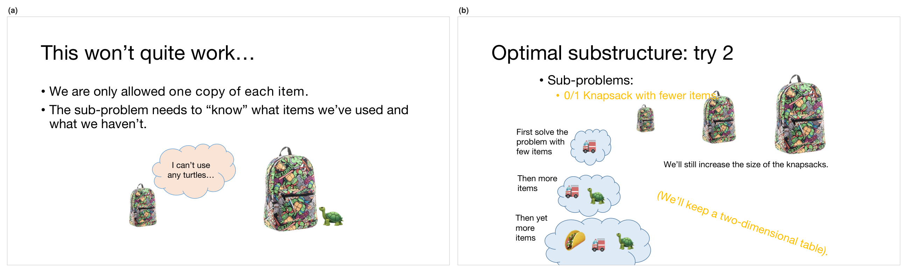
- 물건은 하나씩만 쓸 수 있습니다.
- 따라서 부분 문제는 어떤 물건을 이미 썼고 어떤 물건을 쓰지 않았는지를 “알아야” 합니다.
무제한 배낭의 논증을 그대로 옮기면 어디서 깨지는지 보입니다. 용량 \(x\)의 최적해에서 거북이를 하나 빼면 용량 \(x - w_i\)의 해가 남지만, 그 작은 배낭은 거북이를 다시 쓸 수 없는 상태입니다. 그런데 \(K[x - w_i]\)는 거북이를 쓸 수 있다는 전제로 계산된 값이므로, 그 값에 거북이를 더하면 거북이를 두 번 쓴 해가 나올 수 있습니다. 용량 하나만으로는 이 차이를 표현할 수 없습니다.
1단계: 최적 부분 구조 — 두 번째 시도 (Optimal Substructure: Try 2)
- 부분 문제: 더 적은 물건에 대한 0/1 배낭 문제입니다.
- 먼저 물건이 적을 때 풀고, 물건을 더 늘리고, 또 더 늘립니다.
- 배낭의 크기도 여전히 키워 나갑니다.
- 그래서 2차원 표를 유지합니다.
우리의 부분 문제 (Our Sub-problems)
부분 문제는 두 인덱스로 정해집니다.
- 용량 \(x\): 배낭의 크기
- \(j\): 처음 \(j\)개의 물건만 쓸 수 있다는 제한
슬라이드의 정의는 다음과 같습니다. \(K[x, j]\)는 크기 \(x\)인 배낭에 처음 \(j\)개의 물건만 써서 담을 수 있는 최적의 가치이고, 원래 문제의 답은 \(K[W, n]\)입니다.
“처음 \(j\)개”로 제한하면 부분 문제가 “물건 \(j\)보다 뒤의 물건은 아직 쓰지 않았다”는 정보를 인덱스 안에 담게 됩니다. 첫 시도에서 부족했던 “무엇을 썼는가”를 이렇게 기록하는 것입니다.
부분 문제 사이의 관계 (Relationship Between Sub-problems)
\(K[x, j]\)를 더 작은 부분 문제들로 나타내려면, 처음 \(j\)개 물건에 대한 최적해가 물건 \(j\)를 쓰는지 쓰지 않는지로 경우를 나눕니다.
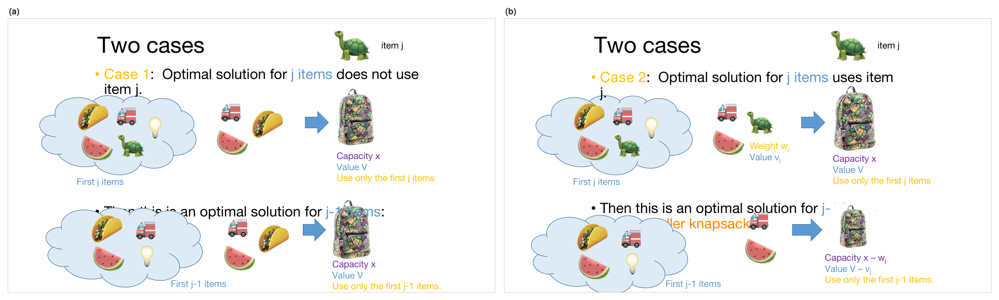
Case 1: 처음 \(j\)개 물건에 대한 최적해가 물건 \(j\)를 쓰지 않는 경우
- 슬라이드는 “이 문제를 풀려면 어떤 더 작은 인덱스의 문제를 풀어야 할까요?”라고 묻습니다(1분 생각, 1분 공유).
- 그러면 이 해는 처음 \(j-1\)개 물건에 대한 최적해입니다. 용량은 \(x\) 그대로, 가치도 \(V\) 그대로입니다.
- 물건 \(j\)를 쓰지 않는 해는 처음 \(j-1\)개 물건만 쓰는 해이기도 합니다. 그보다 더 좋은 \(j-1\)개 물건의 해가 있다면 그것은 \(j\)개 물건의 해로서도 더 좋으므로 모순입니다.
Case 2: 처음 \(j\)개 물건에 대한 최적해가 물건 \(j\)를 쓰는 경우
- 그러면 이 해에서 물건 \(j\)를 뺀 것은 처음 \(j-1\)개 물건과 더 작은 배낭(용량 \(x - w_j\))에 대한 최적해입니다. 그 가치는 \(V - v_j\)입니다.
- 근거는 무제한 배낭의 거북이 논증과 같습니다. 처음 \(j-1\)개 물건으로 용량 \(x - w_j\)에서 \(V - v_j\)보다 좋은 해가 있다면, 거기에 물건 \(j\)를 더해 용량 \(x\)에서 \(V\)보다 좋은 해를 얻습니다.
- 무제한 배낭과 다른 점은 물건 \(j\)를 다시 넣어도 안전하다는 것이 보장된다는 것입니다. 작은 문제는 처음 \(j-1\)개 물건만 쓰므로, 그 해에는 물건 \(j\)가 들어 있을 수 없습니다.
2단계: 재귀식 (Recursive Relationship)
\(K[x, j]\)를 용량 \(x\), 처음 \(j\)개 물건에 대한 최적의 가치라 하면, 두 경우 가운데 좋은 쪽이 답입니다.
\[ K[x, j] \;=\; \max\bigl\{\; \underbrace{K[x,\, j-1]}_{\text{Case 1}} ,\;\; \underbrace{K[x - w_j,\, j-1] + v_j}_{\text{Case 2}} \;\bigr\} \]
기저 사례는 \(K[x, 0] = 0\), \(K[0, j] = 0\)입니다. Case 2는 \(w_j \le x\)일 때만 후보가 됩니다.
무제한 배낭의 재귀식과 나란히 놓으면 차이가 분명합니다.
| 무제한 배낭 | 0/1 배낭 | |
|---|---|---|
| 물건 \(i\)(또는 \(j\))를 넣은 뒤의 남은 문제 | \(K[x - w_i]\) — 물건 \(i\)를 또 쓸 수 있음 | \(K[x - w_j, j-1]\) — 물건 \(j\)를 더는 쓸 수 없음 |
| 최댓값을 취하는 범위 | 담을 수 있는 모든 물건 \(i\) | 물건 \(j\)를 쓰느냐 마느냐의 두 경우 |
3단계: 상향식 동적 계획법 알고리즘 (Bottom-Up DP Algorithm)
Zero-One-Knapsack(W, n, w, v):
K[x,0] = 0 for all x = 0,…,W # 물건을 하나도 못 쓰면 가치 0
K[0,i] = 0 for all i = 0,…,n # 용량이 0이면 가치 0
for x = 1,…,W:
for j = 1,…,n:
K[x,j] = K[x, j-1] # Case 1: 물건 j를 쓰지 않는다
if w_j ≤ x:
K[x,j] = max{ K[x,j], K[x − w_j, j-1] + v_j } # Case 2: 물건 j를 쓴다
return K[W,n]- 수행 시간: \(O(nW)\). 표의 칸은 \((W+1)(n+1)\)개이고, 칸마다 상수 시간이 듭니다.
- 반복 순서도 맞습니다. \(K[x, j-1]\)은 같은 \(x\)의 안쪽 반복에서 바로 전에, \(K[x - w_j, j-1]\)은 더 작은 \(x\)의 바깥 반복에서 이미 계산되었습니다.
예제 (Example)
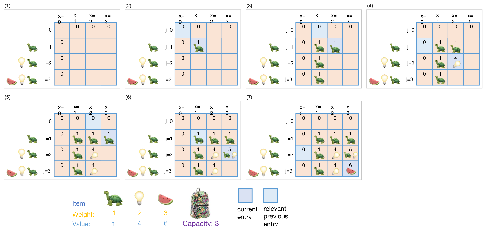
x=0 등이 두 줄로 줄바꿈되어 있고, 범례의 마지막 단어 entry는 슬라이드 아래 경계에 걸려 잘려 있습니다.물건은 무제한 배낭의 예제와 같은 거북이(1, 1), 전구(2, 4), 수박(3, 6)이고, 이번에는 용량이 \(W = 3\)입니다. 슬라이드의 표와 같이 행을 \(j\), 열을 \(x\)로 두면 최종 표는 다음과 같습니다.
| \(K[x,j]\) | \(x=0\) | \(x=1\) | \(x=2\) | \(x=3\) |
|---|---|---|---|---|
| \(j=0\) (물건 없음) | 0 | 0 | 0 | 0 |
| \(j=1\) (거북이) | 0 | 1 | 1 | 1 |
| \(j=2\) (+ 전구) | 0 | 1 | 4 | 5 |
| \(j=3\) (+ 수박) | 0 | 1 | 4 | 6 |
알고리즘은 바깥 반복이 \(x\)이므로 열 단위로 위에서 아래로 채웁니다. 각 칸에서 Case 1(바로 위 칸 \(K[x, j-1]\))과 Case 2를 비교합니다.
- \(x = 1\): \(K[1,1] = \max\{K[1,0],\; K[0,0] + 1\} = \max\{0, 1\} = 1\) (거북이). \(K[1,2]\)와 \(K[1,3]\)은 전구와 수박이 용량 1에 들어가지 않으므로 Case 1만 남아 1입니다.
- \(x = 2\): \(K[2,1] = \max\{0,\; K[1,0] + 1\} = 1\). \(K[2,2] = \max\{K[2,1],\; K[0,1] + 4\} = \max\{1, 4\} = 4\) (전구). \(K[2,3]\)은 수박이 들어가지 않아 4입니다.
- \(x = 3\): \(K[3,1] = \max\{0,\; K[2,0] + 1\} = 1\). \(K[3,2] = \max\{K[3,1],\; K[1,1] + 4\} = \max\{1, 5\} = 5\) (거북이 + 전구). \(K[3,3] = \max\{K[3,2],\; K[0,2] + 6\} = \max\{5, 6\} = 6\) (수박).
슬라이드의 결론대로 최적해는 배낭에 수박 하나를 넣는 것이고, 가치는 \(K[3, 3] = 6\)입니다.
- \(K[2,1] = 1\)을 보면 Case 2가 물건 \(j\)를 다시 쓰지 않는 방식이 드러납니다. 거북이를 넣을 때 참조하는 칸은 같은 행의 \(K[1,1] = 1\)이 아니라 쓸 수 있는 물건이 하나도 없는 \(K[1,0] = 0\)이므로, 용량 2에도 거북이는 하나만 들어갑니다. 무제한 배낭 예제에서 같은 거북이 단계가 \(K[2] = K[1] + 1 = 2\), 곧 거북이 둘을 기록했던 것(슬라이드 51)과 대조됩니다. \(K[3,1] = 1\)도 같은 이유입니다.
4단계: 실제 해 찾기
슬라이드는 레시피의 4단계를 화살표로 가리키지만, 0/1 배낭의 복원 방법을 따로 싣지는 않습니다. 다만 예제의 표가 칸마다 그 값을 내는 물건 묶음을 함께 그려 두었으므로, 무제한 배낭의 \(\mathrm{ITEMS}\)처럼 칸마다 물건 목록을 기록하면 된다는 것을 보여 줍니다. 표만 남겨 두고 복원하는 것도 가능합니다. \((W, n)\)에서 출발해 \(K[x, j] = K[x, j-1]\)이면 물건 \(j\)를 쓰지 않은 것이므로 \((x, j-1)\)로, 아니면 물건 \(j\)를 쓴 것이므로 그것을 모으고 \((x - w_j, j-1)\)로 가면 됩니다. 3.8에서 표를 거꾸로 걸어가며 최장 공통 부분 수열을 복원한 것과 같은 생각입니다.
무엇을 배웠나 (What Have We Learned?)
- 물건이 \(n\)개이고 배낭의 용량이 \(W\)이면, 0/1 배낭 문제를 \(O(nW)\) 시간에 풀 수 있습니다.
- 다시 한번 동적 계획법 해법을 만드는 단계를 밟았습니다.
- 2차원 표를 두고, 쓸 수 있는 물건의 집합을 제한해 더 작은 문제를 만들었습니다.
4.5 질문: 어떤 부분 구조를 쓸지 어떻게 알았을까요? (Question)
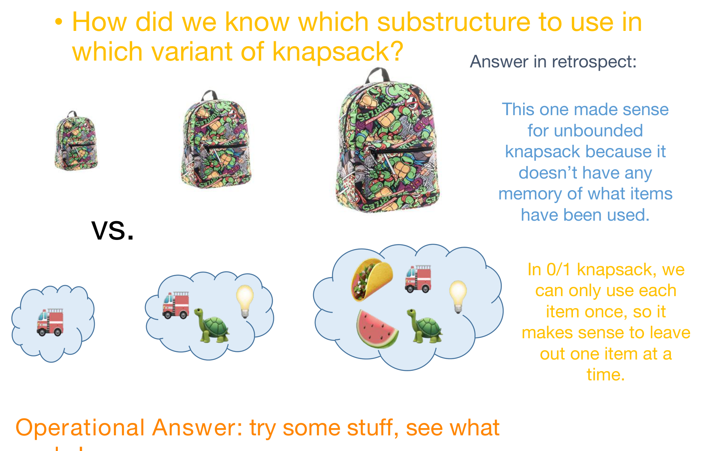
어느 변형에 어느 부분 구조를 쓸지 어떻게 알았을까요?
- 돌이켜 본 답(answer in retrospect)
- 더 작은 배낭이라는 부분 구조는 무제한 배낭에 맞았습니다. 무제한 배낭의 부분 문제는 어떤 물건을 썼는지 전혀 기억할 필요가 없기 때문입니다.
- 0/1 배낭에서는 물건마다 한 번만 쓸 수 있으므로, 물건을 하나씩 빼 나가는 것이 맞습니다.
- 실용적인 답(operational answer): 이것저것 시도해 보고, 무엇이 통하는지 보세요!
정리하면, 부분 문제의 인덱스는 최적해를 떼어 냈을 때 남은 문제를 설명하는 데 필요한 정보를 모두 담아야 합니다. 무제한 배낭에서는 남은 용량 하나면 충분했고, 0/1 배낭에서는 남은 용량과 함께 “아직 쓸 수 있는 물건”이 필요했습니다. 3.5에서 최장 공통 부분 수열의 부분 문제가 접두사 쌍 \((i, j)\)였던 것도 같은 이유입니다.
5. 독립 집합 (Example 3: Independent Set)
슬라이드는 이 예제에 “시간이 남으면(if we still have time)”이라는 부제를 붙였습니다. 개요(Today)에서 예고했듯, 강의 시간에 다루지 못하면 참고 자료로 남겨 두는 부분입니다.
5.1 문제 (The Problem)
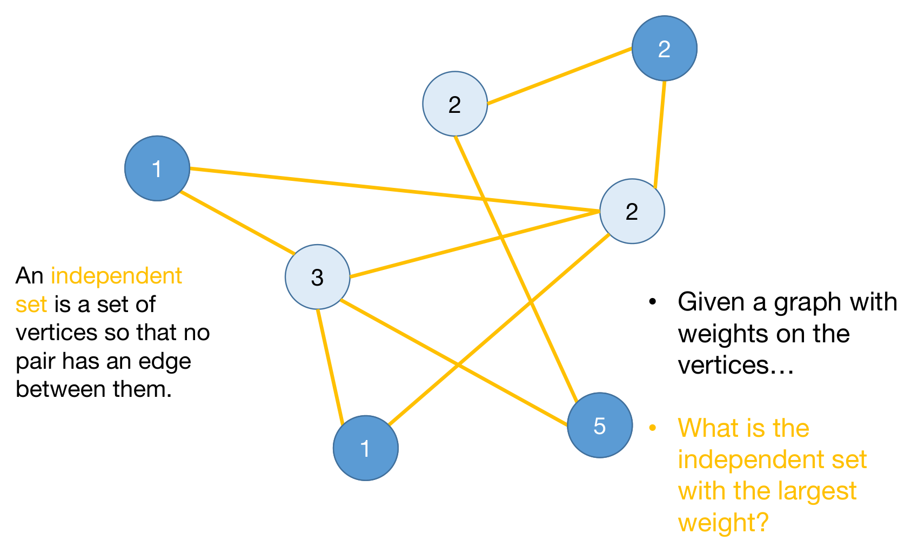
그래프 \(G = (V, E)\)에서 독립 집합(independent set) \(S \subseteq V\)는 어떤 두 정점 사이에도 간선이 없는 정점 집합입니다. 정점마다 가중치 \(\mathrm{weight}(v)\)가 있을 때, 독립 집합의 가중치는 \(\sum_{v \in S} \mathrm{weight}(v)\)이고, 이 문제는 가중치가 가장 큰 독립 집합을 찾는 것입니다.
슬라이드의 그래프에서 진하게 칠한 정점 넷(가중치 1, 1, 2, 5)은 서로 이웃하지 않으므로 독립 집합이고, 가중치 합은 9입니다. 연한 정점들(가중치 3, 2, 2)은 가중치가 더 큰 것도 있지만, 각각 진한 정점 여럿과 이웃하기 때문에 하나를 넣으면 여러 개를 포기해야 합니다. 정점 일곱 개의 부분집합 \(2^7 = 128\)개를 모두 확인하면 9가 최대이고, 그 독립 집합은 진한 정점 넷뿐입니다.
5.2 사실 이 문제는 NP-완전입니다 (Actually, This Problem Is NP-Complete)
- 그래서 효율적인 알고리즘을 찾을 가능성은 낮습니다.
- 하지만 그래프가 트리라고 가정하면…
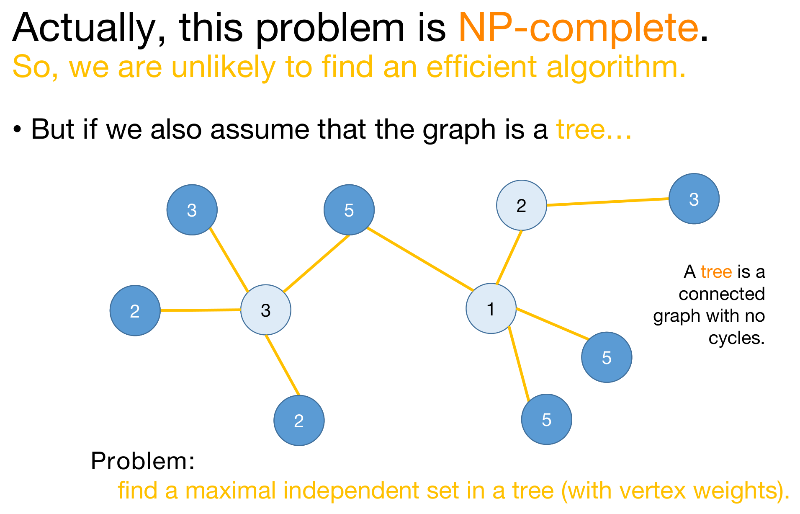
트리(tree)는 순환이 없는 연결 그래프입니다. 이번 예제의 문제는 다음과 같습니다.
- 문제: 정점 가중치가 있는 트리에서 최대 독립 집합을 찾습니다.
슬라이드는 이 문제를 maximal independent set이라고 부르지만, 뜻하는 바는 가중치가 가장 큰 독립 집합, 곧 최대 가중치 독립 집합(maximum-weight independent set)입니다. 그래프 이론의 표준 용어에서 극대(maximal) 독립 집합은 “어떤 정점을 더해도 더는 독립 집합이 아닌” 집합을 가리키며, 이는 탐욕적으로 정점을 더해 가기만 해도 쉽게 얻을 수 있습니다. 앞의 NP-완전성은 최대(maximum) 쪽에 대한 이야기입니다. 이 포스트는 슬라이드의 의도에 따라 “최대 (가중치) 독립 집합”으로 옮깁니다.
5.3 1단계: 최적 부분 구조 (Optimal Substructure)
- 부분 트리(subtree)가 자연스러운 후보입니다. 트리에 뿌리(root)를 하나 정하면, 각 정점 \(u\)에 대해 “\(u\)를 뿌리로 하는 부분 트리”가 부분 문제가 됩니다.
- 두 가지 경우가 있습니다.
- 이 트리의 뿌리가 최대 독립 집합에 들어 있지 않거나,
- 들어 있습니다.
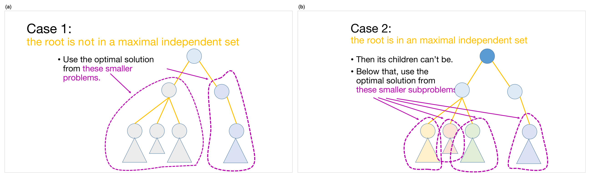
Case 1: 뿌리가 최대 독립 집합에 들어 있지 않은 경우
- 이 더 작은 문제들의 최적해를 씁니다. 곧 뿌리의 각 자식을 뿌리로 하는 부분 트리에서 최대 독립 집합을 구해 합칩니다.
Case 2: 뿌리가 최대 독립 집합에 들어 있는 경우
- 그러면 뿌리의 자식들은 들어갈 수 없습니다. 뿌리와 간선으로 이어져 있기 때문입니다.
- 그 아래에서는 이 더 작은 부분 문제들의 최적해를 씁니다. 곧 뿌리의 각 손자를 뿌리로 하는 부분 트리의 최대 독립 집합을 합치고, 뿌리를 더합니다.
이렇게 합쳐도 되는 이유는 트리의 구조에 있습니다. 서로 다른 자식(또는 손자)을 뿌리로 하는 부분 트리들은 정점을 공유하지 않고, 그 사이에 간선도 없습니다. 한 부분 트리를 벗어나는 간선은 위쪽의 부모로 가는 것 하나뿐이기 때문입니다. 따라서 각 부분 트리의 독립 집합을 합쳐도 여전히 독립 집합이고, 각 부분 트리에서 최선을 고르는 것이 전체에서도 최선입니다. 일반 그래프에서는 이렇게 문제가 서로 떨어진 조각으로 깔끔하게 나뉘지 않으며, 그것이 트리라는 가정이 필요한 이유입니다.
5.4 2단계: 재귀식 (Recursive Formulation)
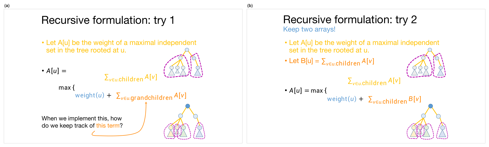
첫 시도 (Try 1)
- \(A[u]\)를 \(u\)를 뿌리로 하는 트리에서 최대 독립 집합의 가중치라 합시다.
두 경우를 그대로 식으로 옮기면 다음과 같습니다.
\[ A[u] \;=\; \max\Bigl\{\; \sum_{v \in u.\mathrm{children}} A[v] ,\;\; \mathrm{weight}(u) + \sum_{v \in u.\mathrm{grandchildren}} A[v] \;\Bigr\} \]
- 첫 항이 Case 1(뿌리를 넣지 않음), 둘째 항이 Case 2(뿌리를 넣음)입니다.
- 슬라이드는 묻습니다. 이것을 구현할 때, 손자들에 대한 합이라는 항을 어떻게 추적할까요? 정점마다 손자 목록을 따로 찾아 다니는 것은 번거롭습니다.
두 번째 시도: 배열을 두 개 둡니다 (Try 2: Keep Two Arrays!)
- \(A[u]\)는 그대로 \(u\)를 뿌리로 하는 트리에서 최대 독립 집합의 가중치입니다.
- 새 배열 \(B[u]\)를 자식들의 \(A\) 값의 합으로 둡니다.
\[ B[u] \;=\; \sum_{v \in u.\mathrm{children}} A[v] \]
그러면 손자들에 대한 합을 자식들만 보고 다시 쓸 수 있습니다. 각 손자는 정확히 한 자식의 자식이므로 다음이 성립합니다.
\[ \sum_{v \in u.\mathrm{children}} B[v] \;=\; \sum_{v \in u.\mathrm{children}} \;\sum_{w \in v.\mathrm{children}} A[w] \;=\; \sum_{w \in u.\mathrm{grandchildren}} A[w] \]
\[ \begin{aligned} A[u] &= \max\Bigl\{\; \sum_{v \in u.\mathrm{children}} A[v] ,\;\; \mathrm{weight}(u) + \sum_{v \in u.\mathrm{children}} B[v] \;\Bigr\} \\ B[u] &= \sum_{v \in u.\mathrm{children}} A[v] \end{aligned} \]
잎(leaf) \(u\)에서는 \(A[u] = \mathrm{weight}(u)\), \(B[u] = 0\)입니다.
\(B[u]\)는 “\(u\)를 넣지 않는다고 할 때 \(u\)의 부분 트리에서 얻을 수 있는 최대 가중치”로 읽을 수도 있습니다. 그러면 \(A[u]\)의 첫 항은 바로 \(B[u]\)이고, 둘째 항은 “\(u\)를 넣었으니 자식들은 모두 넣지 않는다고 할 때의 값들의 합”입니다.
5.5 3단계: 하향식 동적 계획법 알고리즘 (A Top-Down DP Algorithm)
MIS_subtree(u): # 모든 재귀 호출이 함께 쓰는 전역 배열 A, B를 미리 만들어 둔다
if u is a leaf:
A[u] = weight(u) # 잎은 자기 자신을 넣는 것이 최선
B[u] = 0
else:
for v in u.children:
MIS_subtree(v) # 자식들의 A, B를 먼저 채운다
A[u] = max{ Σ_{v ∈ u.children} A[v], weight(u) + Σ_{v ∈ u.children} B[v] }
B[u] = Σ_{v ∈ u.children} A[v]
MIS(T):
MIS_subtree(T.root)
return A[T.root]- 슬라이드의 노란 메모대로, 전역 배열 \(A\), \(B\)를 초기화해 두고 모든 재귀 호출에서 함께 씁니다.
- 수행 시간은?
- 각 정점을 한 번씩 방문하고, 정점마다 \(O(1)\)의 일을 합니다.
- 재귀 호출을 한 번 받습니다.
- 부모 정점의 합 계산들에 참여합니다.
- 따라서 수행 시간은 \(O(|V|)\)입니다.
- 각 정점을 한 번씩 방문하고, 정점마다 \(O(1)\)의 일을 합니다.
정점 \(u\)에서 자식 수만큼 더하는 일이 \(O(1)\)이 아니라고 느껴질 수 있습니다. 하지만 이 덧셈을 “자식 \(v\)가 부모의 합 계산에 참여하는 것”으로 세면, 각 자식은 부모의 합 세 개(의사코드의 \(\sum A[v]\) 두 번과 \(\sum B[v]\) 한 번)에 한 번씩 들어가므로, 모든 정점에서의 덧셈 횟수를 합해도 간선 수 \(|V| - 1\)의 세 배를 넘지 않습니다. 슬라이드가 “부모 정점의 합 계산에 참여한다”고 적은 것이 이 회계 방식입니다.
예제 트리에 적용해 보기
슬라이드에는 없지만, 5.2의 트리에 이 알고리즘을 직접 돌려 보면 재귀식이 어떻게 답을 내는지 볼 수 있습니다. 위쪽 가운데의 가중치 5 정점을 뿌리 \(r\)로 잡고, 나머지 안쪽 정점에 다음과 같이 이름을 붙입니다.
- \(d\): 왼쪽 가운데의 3 (자식은 잎 3, 2, 2)
- \(f\): 오른쪽 가운데의 1 (자식은 \(g\)와 잎 5, 5)
- \(g\): 오른쪽 위의 2 (자식은 잎 3)
잎은 모두 \(A = \mathrm{weight}\), \(B = 0\)이고, 안쪽 정점은 아래에서부터 다음과 같이 채워집니다.
| 정점 | 가중치 | 자식 | \(B[u]\) | \(A[u]\) |
|---|---|---|---|---|
| \(g\) | 2 | 잎 3 | 3 | \(\max\{3,\; 2 + 0\} = 3\) |
| \(d\) | 3 | 잎 3, 2, 2 | 7 | \(\max\{7,\; 3 + 0\} = 7\) |
| \(f\) | 1 | \(g\), 잎 5, 잎 5 | \(3 + 5 + 5 = 13\) | \(\max\{13,\; 1 + 3 + 0 + 0\} = 13\) |
| \(r\) | 5 | \(d\), \(f\) | \(7 + 13 = 20\) | \(\max\{20,\; 5 + 7 + 13\} = 25\) |
- 답은 \(A[r] = 25\)이고, 이는 슬라이드에서 진하게 칠한 정점 일곱 개의 가중치 합과 같습니다.
- \(r\)에서는 둘째 항(뿌리를 넣음)이 이겼습니다. 그러면 \(d\)와 \(f\)는 빠지고, \(B[d] = 7\)은 잎 3, 2, 2를, \(B[f] = 13\)은 \(A[g] = 3\)(잎 3)과 잎 5, 5를 가져옵니다.
- \(d\), \(f\), \(g\)에서는 모두 첫 항(그 정점을 넣지 않음)이 이겼습니다. 예를 들어 \(f\)를 넣으면 가중치 1을 얻는 대신 잎 5 두 개를 포기해야 합니다.
5.6 왜 분할 정복과 다를까요? (Why Is This Different from Divide-and-Conquer?)
슬라이드는 “트리 문제에서는 늘 분할 정복이 통하지 않았나요…”라고 묻습니다. 실제로 5.5의 알고리즘에서 표를 걷어 내면 다음과 같은 분할 정복 알고리즘이 됩니다.
MIS_subtree(u):
if u is a leaf:
return weight(u)
else:
return max{ Σ_{v ∈ u.children} MIS_subtree(v),
weight(u) + Σ_{v ∈ u.grandchildren} MIS_subtree(v) } # 손자마다 다시 재귀 호출
MIS(T):
return MIS_subtree(T.root)- 슬라이드의 파란 메모대로, 이것은 정확히 같은 의사코드인데, 표를 버리고 \(A[v]\)나 \(B[v]\)를 찾아보는 대신
MIS_subtree(v)를 호출할 뿐입니다.
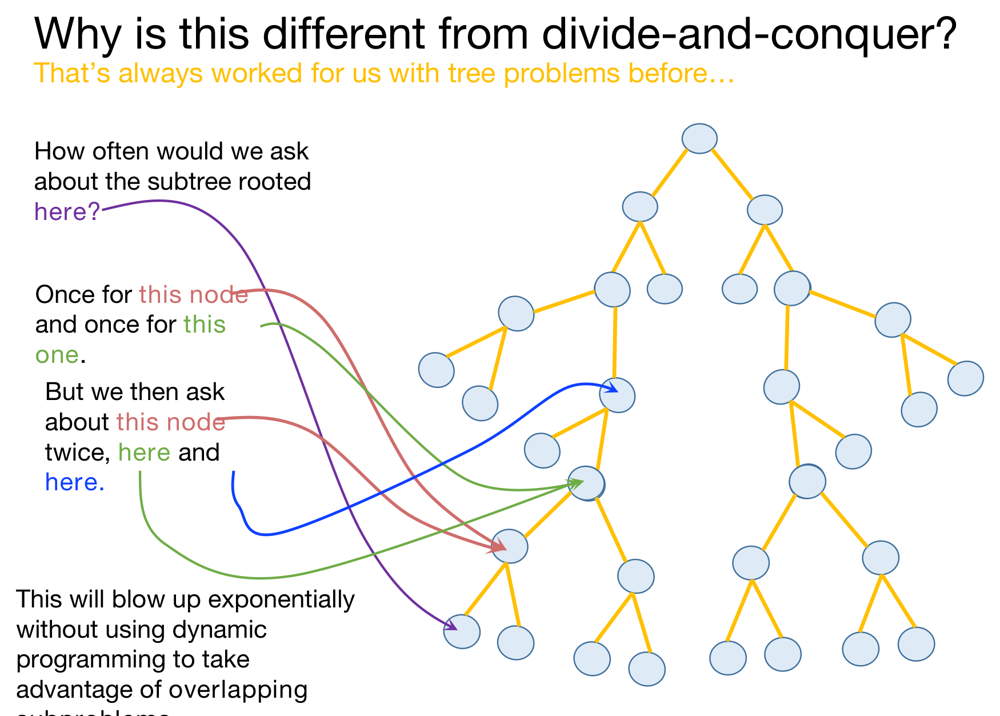
- 이 정점을 뿌리로 하는 부분 트리에 대해 몇 번이나 묻게 될까요?
- 이 정점(부모)에서 한 번, 저 정점(조부모)에서 한 번 묻습니다. 부모는 자식으로서, 조부모는 손자로서 같은 정점을 부르기 때문입니다.
- 그런데 그러면 이 정점(부모) 자체에 대해서도 다시 두 번, 여기(그 부모)서와 여기(그 조부모)서 묻습니다. 부모가 불릴 때마다 맨 아래 정점을 또 부르므로, 위로 올라갈수록 호출 횟수가 거듭 곱해집니다.
- 동적 계획법으로 중복되는 부분 문제를 활용하지 않으면, 이것은 지수적으로 불어납니다.
얼마나 불어나는지는 가장 단순한 트리인 경로(path)로 확인할 수 있습니다. 정점 \(k\)개가 일렬로 이어진 경로의 끝을 뿌리로 하면, 뿌리의 자식은 정점 \(k-1\)개짜리 경로의 뿌리이고 손자는 정점 \(k-2\)개짜리 경로의 뿌리입니다. 호출 수를 \(T(k)\)라 하면 \(T(k) = 1 + T(k-1) + T(k-2)\)이므로, \(T(k)\)는 피보나치 수처럼 지수적으로 자랍니다. 반면 5.5의 알고리즘은 각 정점의 \(A\), \(B\)를 한 번만 계산해 표에 두고 다시 찾아보므로 \(O(|V|)\)입니다.
분할 정복이 트리에서 잘 통했던 것은 부분 문제들이 서로 겹치지 않았기 때문입니다. 이 문제에서는 Case 2가 손자를 직접 부르기 때문에, 같은 부분 트리가 자식 경로와 손자 경로로 겹쳐서 요구됩니다. 지난 시간의 기본 아이디어 가운데 “중복되는 부분 문제를 활용한다”가 바로 이 차이를 메우는 장치입니다.
5.7 무엇을 배웠나 (What Have We Learned?)
슬라이드는 레시피의 4단계 화살표(실제 해 찾기)를 보여 준 뒤 따로 내용을 싣지 않고 정리로 넘어갑니다. 배낭 문제처럼 \(A[u]\)가 어느 항에서 왔는지를 뿌리부터 되짚으면 집합 자체를 복원할 수 있으며, 5.5의 예제 표 아래 설명이 그 과정입니다.
- 동적 계획법을 써서 트리의 최대 독립 집합을 \(O(|V|)\) 시간에 찾을 수 있습니다!
- 이 예제에서는 동적 계획법 알고리즘을 하향식(top-down)으로 구현하는 것이 자연스러웠습니다.
하향식이 자연스러운 이유는 계산 순서가 트리 모양을 따르기 때문입니다. 각 정점은 자식들의 값이 모두 준비된 뒤에야 계산할 수 있는데, 재귀 호출이 자식부터 처리하므로 그 순서가 저절로 맞춰집니다. 앞의 두 예제처럼 인덱스가 정수인 표라면 작은 인덱스부터 반복문으로 채우는 상향식(bottom-up)이 자연스러웠던 것과 대조됩니다.
6. 되짚어보기 (Recap)
- 오늘은 동적 계획법 알고리즘을 고안하는 방법의 예들을 보았습니다.
- 최장 공통 부분 수열
- 두 가지 방식의 배낭 문제
- (시간이 되면) 트리의 최대 독립 집합
- 동적 계획법 알고리즘에는 레시피가 있습니다. (3.4의 다섯 단계)
- 알맞은 부분 구조를 떠올리는 데는 때로 창의성이 필요합니다.
- 과제로 연습하세요!
- 더 많이 연습하려면 CLRS, Algorithms Illuminated, 또는 분반(section)의 추가 예제와 연습 문제를 보세요!
세 예제의 레시피를 한 표로 모으면 다음과 같습니다.
| 최장 공통 부분 수열 | 무제한 배낭 | 0/1 배낭 | 트리의 최대 독립 집합 | |
|---|---|---|---|---|
| 부분 문제 | 접두사 쌍 \((X_i, Y_j)\) | 더 작은 배낭 \(x\) | 배낭 \(x\)와 처음 \(j\)개 물건 | 정점 \(u\)의 부분 트리 |
| 표 | 2차원 \(C[i,j]\) | 1차원 \(K[x]\) | 2차원 \(K[x,j]\) | 배열 둘 \(A[u]\), \(B[u]\) |
| 경우 나누기 | 마지막 글자가 같은가 | 마지막에 넣은 물건 \(i\) | 물건 \(j\)를 쓰는가 | 뿌리 \(u\)를 넣는가 |
| 수행 시간 | \(O(mn)\) | \(O(nW)\) | \(O(nW)\) | \(O(\lvert V \rvert)\) |
| 구현 방향 | 상향식 | 상향식 | 상향식 | 하향식 |
6.1 다음 시간 (Next Time)
- 탐욕 알고리즘(greedy algorithms)!
정리하며 (Closing Remarks)
이번 강의의 논리 사슬을 단계별로 압축하면 다음과 같습니다.
| 단계 | 내용 | 근거 |
|---|---|---|
| ① 레시피 | 최적 부분 구조 → 재귀식 → 표로 값 계산 → 해 복원 → 구현의 다섯 단계를 세 예제에 되풀이한다 | 지난 시간의 기본 아이디어, 레시피 슬라이드 |
| ② LCS의 부분 문제 | 두 수열의 접두사 쌍을 부분 문제로 잡고 \(C[i,j]\)를 \(X_i\)와 \(Y_j\)의 LCS 길이로 둔다 | 1단계, \(C[2,3]=2\), \(C[4,4]=3\) |
| ③ LCS의 재귀식 | 빈 접두사면 0, 마지막 글자가 같으면 \(C[i-1,j-1]+1\), 다르면 \(\max\{C[i,j-1], C[i-1,j]\}\) | 마지막 글자에 대한 두 경우 |
| ④ LCS의 계산과 복원 | 표를 \(O(mn)\)에 채우고, 오른쪽 아래에서 위·왼쪽으로 걸으며 대각선 점프마다 글자를 모아 \(O(m+n)\)에 복원한다. 길이만 필요하면 행 두 개로 충분하다 | ACGGA와 ACTG의 예 → ACG |
| ⑤ 무제한 배낭 | 최적해에서 물건 하나를 빼도 작은 배낭의 최적해이므로 \(K[x] = \max_i \{K[x-w_i]+v_i\}\)이고 \(O(nW)\), 갱신 때마다 ITEMS를 기록해 해를 얻는다 | 거북이 논증, 용량 4 예제 → 전구 둘, 가치 8 |
| ⑥ 입력 크기 | 입력 크기는 \(n\log W\)이므로 \(O(nW)\)는 다항 시간이 아니며, 훨씬 빠른 알고리즘이 있는지는 열린 문제다(있다면 P = NP) | Can we do better? |
| ⑦ 0/1 배낭 | 용량만으로는 쓴 물건을 기억하지 못하므로 처음 \(j\)개 물건으로 제한한 \(K[x,j]\)를 두고, 물건 \(j\)를 쓰는지로 나눠 \(O(nW)\)에 푼다 | 두 경우, 용량 3 예제 → 수박, 가치 6 |
| ⑧ 부분 구조 고르기 | 부분 문제의 인덱스는 남은 문제를 설명하는 정보를 모두 담아야 한다. 무제한은 용량만, 0/1은 용량과 물건 범위가 필요하다 | Question 슬라이드 |
| ⑨ 트리의 독립 집합 | 일반 그래프에서는 NP-완전이지만, 트리에서는 뿌리를 넣는지로 나누면 서로 떨어진 부분 트리들로 쪼개진다 | 두 경우 |
| ⑩ 두 배열 | 손자 합을 피하려고 \(B[u] = \sum A[v]\)를 함께 두면 \(A[u] = \max\{B[u],\, \mathrm{weight}(u) + \sum B[v]\}\)를 자식만 보고 \(O(\lvert V \rvert)\)에 하향식으로 계산한다 | 재귀식 try 2, 예제 트리 → 25 |
| ⑪ 분할 정복과의 차이 | 표 없이 자식과 손자를 모두 재귀 호출하면 같은 부분 트리를 거듭 물어 호출 수가 지수적으로 불어난다. 중복 부분 문제를 표로 기억하는 것이 동적 계획법이다 | Why is this different from divide-and-conquer? |